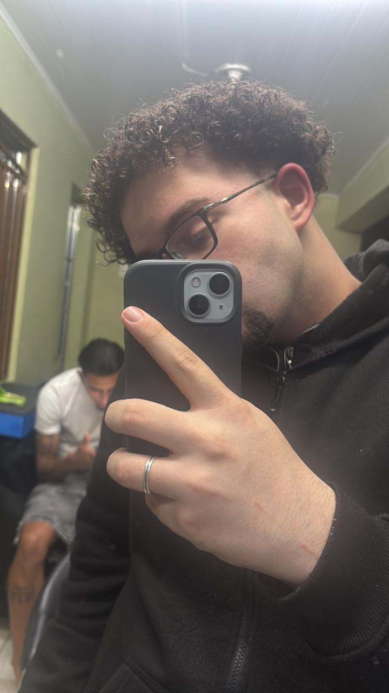

Olá, eu sou Gabriel Fonseca 👋
Estudante de Análise e Desenvolvimento de Sistemas.
Sou estudante de Análise e Desenvolvimento de Sistemas e estou iniciando minha jornada na programação. Tenho interesse em Inteligência Artificial e desenvolvimento Web, buscando transformar meu aprendizado em projetos e construir meu futuro na tecnologia.
Sobre mim
Meu nome é Gabriel Fonseca e sou estudante de Análise e Desenvolvimento de Sistemas. Escolhi essa área porque sempre gostei de números, lógica e da ideia de entender como a tecnologia funciona. Desde os meus 13 anos eu já pensava em seguir na área de TI, mas meu interesse aumentou ainda mais quando comecei a ouvir pessoas próximas falando sobre tecnologia e passei a pesquisar e aprender mais sobre o assunto.
Estou no início da minha jornada na programação e tenho gostado muito dessa nova fase. A cada aula e atividade aprendo algo diferente, e isso aumenta ainda mais minha curiosidade pela área.
Atualmente, tenho bastante interesse em Inteligência Artificial e desenvolvimento Front-End. No futuro, também quero conhecer melhor o Back-End e outras áreas da tecnologia. Pretendo continuar evoluindo na programação e me aprofundar principalmente na área de Inteligência Artificial.
Me considero uma pessoa curiosa, esforçada, comunicativa e responsável. Gosto de aprender coisas novas e trabalhar em equipe. Quero continuar evoluindo nos estudos e na carreira, conquistar minha independência financeira e construir um bom futuro pessoal e profissional.
Meus estudos
| Tema | Conhecimento atual | Próximo passo |
|---|---|---|
| HTML / Front-End | Estou aprendendo a criar e estruturar páginas Web utilizando HTML. | Aprender mais sobre CSS e melhorar a aparência e organização das páginas. |
| Lógica de Programação / C | Estou aprendendo variáveis, condições, cálculos e entrada e saída de dados. | Praticar mais exercícios e aprender a desenvolver programas maiores. |
| Inteligência Artificial | Estou começando a conhecer suas possibilidades e aplicações. | Estudar os fundamentos de IA e futuramente desenvolver projetos utilizando essa tecnologia. |
Meus objetivos de aprendizagem
- Aprimorar minha lógica de programação.
- Aprender desenvolvimento Web.
- Aprofundar meus conhecimentos em Inteligência Artificial.
Meus interesses
- Programação 💻
- Jogos 🎮
- Tecnologia 🖥️
Entre em contato
Se quiser entrar em contato comigo, preencha o formulário abaixo.
Formulário demonstrativo - os dados não serão enviados.